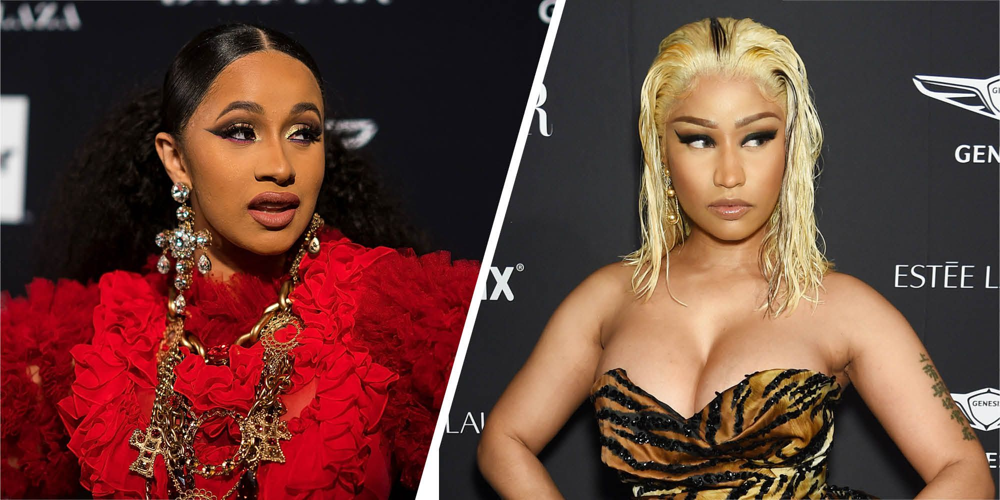

People Magazine Wrote:Nicki Minaj called her public fight with Cardi B “so mortifying and so humiliating,” but Cardi B appears ready to make jokes about it now.
On Saturday, the 25-year-old Bronx-born “Bodak Yellow” rapper shared a photo of a young girl dressed up in a look nearly identical to Cardi’s during the now-infamous incident, which happened Sept. 8 at the Harper’s Bazaar ICONS party during New York Fashion Week.
The mini-me had her hair sleekly pulled back with a messy ponytail, just as Cardi did. She wore a flowing red dress, similar to the Dolce & Gabbana gown Cardi wore. She also layered the outfit with gold necklaces and earrings, accessories meant to mimic Cardi’s.
“Sooooooo buteeeeee ❤️❤️❤️❤️❤️,” Cardi wrote, noting that the girl was only missing one thing: a bruise on her forehead. “She forgot the knot 😩😩😩💪🏾.”